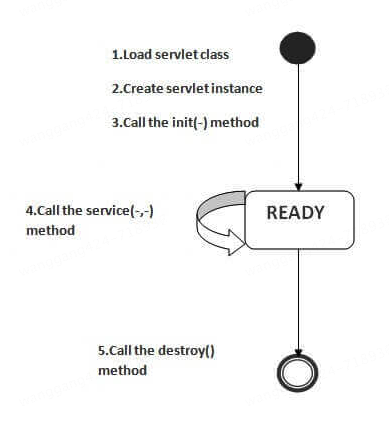
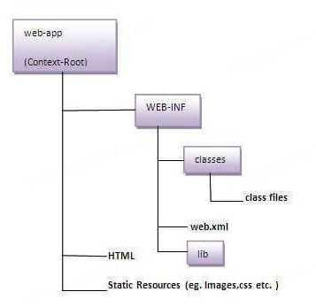

JavaWeb开发基础Servlet生命周期与工作原理¶

Servlet生命周期¶
Servlet的生命周期由Servlet容器（如Tomcat、Jetty等）管理，主要包括以下5个阶段：
加载Servlet类
创建Servlet实例
调用init方法
调用service方法
调用destroy方法

加载（Loading）：
当Servlet容器启动或第一次接收到对某个Servlet的请求时，它会加载Servlet类
这个过程只发生一次，除非Servlet被卸载或容器重新启动
实例化（Instantiation）：
在加载Servlet类之后，容器会创建一个Servlet实例
这个实例化过程也是一次性的，除非Servlet被卸载或容器重新启动
初始化（Initialization）：
容器调用Servlet实例的
init()方法进行初始化init()方法只被调用一次，用于执行一次性的初始化任务，如读取配置参数、初始化资源等你可以重写
init()方法以执行自定义的初始化逻辑public void init(ServletConfig config)
请求处理（Request Handling）：
每当有请求到达时，容器会调用Servlet的
service()方法来处理请求service()方法根据请求的类型（如GET、POST等）调用相应的处理方法（如doGet()、doPost()等）public void service(ServletRequest request, ServletResponse response)
销毁（Destruction）：
当容器决定卸载Servlet（如容器关闭或Servlet被重新加载）时，它会调用Servlet的
destroy()方法destroy()方法用于执行清理任务，如关闭资源、保存状态等destroy()方法只被调用一次public void destroy()
Servlet重新加载
Servlet被重新加载通常发生在以下几种情况下：
Servlet类文件被修改：
如果在开发过程中修改了Servlet类文件，Servlet容器可能会检测到这些更改并重新加载Servlet
这通常发生在开发环境中，生产环境中一般不会自动重新加载
容器配置发生变化：
如果修改了Servlet容器的配置文件（如
web.xml），容器可能会重新加载相关的Servlet
容器重启：
当Servlet容器重启时，所有的Servlet都会被重新加载
手动重新加载：
某些Servlet容器提供了手动重新加载Servlet的功能，通常通过管理控制台或命令行工具
当Servlet被重新加载时，Servlet容器会执行以下步骤：
销毁现有的Servlet实例：
容器调用现有Servlet实例的
destroy()方法，执行清理任务释放资源，如关闭数据库连接、释放文件句柄等
卸载Servlet类：
容器卸载现有的Servlet类，释放类加载器持有的资源
重新加载Servlet类：
容器重新加载Servlet类文件，创建新的类加载器实例
实例化新的Servlet对象：
容器创建新的Servlet实例
初始化新的Servlet实例：
容器调用新的Servlet实例的
init()方法进行初始化
Servlet代码示例¶
有3种方式使用Servlet：
①实现Servlet接口
import java.io.*;
import javax.servlet.*;
public class First implements Servlet {
ServletConfig config = null;
public void init(ServletConfig config) {
this.config = config;
System.out.println("servlet is initialized");
}
public void service(ServletRequest req, ServletResponse res)
throws IOException, ServletException {
res.setContentType("text/html");
PrintWriter out = res.getWriter();
out.print("<html><body>");
out.print("<b>hello simple servlet</b>");
out.print("</body></html>");
}
public void destroy() {
System.out.println("servlet is destroyed");
}
public ServletConfig getServletConfig() {
return config;
}
public String getServletInfo() {
return "copyright 2007-1010";
}
}
②继承GenericServlet类
import java.io.*;
import javax.servlet.*;
public class First extends GenericServlet {
public void service(ServletRequest req, ServletResponse res)
throws IOException, ServletException {
res.setContentType("text/html");
PrintWriter out = res.getWriter();
out.print("<html><body>");
out.print("<b>hello generic servlet</b>");
out.print("</body></html>");
}
}
③继承HttpServlet类
import javax.servlet.http.*;
import javax.servlet.*;
import java.io.*;
public class DemoServ extends HttpServlet {
public void doGet(HttpServletRequest req, HttpServletResponse res) throws ServletException, IOException {
res.setContentType("text/html");
PrintWriter pw = res.getWriter();
String name = req.getParameter("name");
pw.println("Welcome " + name);
}
}
继承HttpServlet类是最常用的方式，接下来通过六个步骤，看看具体实践。
第一步，创建目录结构。

第二步，创建Servlet。
import javax.servlet.http.*;
import javax.servlet.*;
import java.io.*;
public class DemoServlet extends HttpServlet {
public void doGet(HttpServletRequest req, HttpServletResponse res)
throws ServletException, IOException {
res.setContentType("text/html");
PrintWriter pw = res.getWriter();
pw.println("<html><body>");
pw.println("Welcome to servlet");
pw.println("</body></html>");
pw.close();
}
}
第三步，编译Servlet。
<dependency>
<groupId>javax.servlet</groupId>
<artifactId>javax.servlet-api</artifactId>
<version>3.1.0</version>
<scope>provided</scope>
</dependency>
编译后将class文件拷贝到WEB-INF/classes。
第四步，创建web.xml。
<web-app>
<servlet>
<servlet-name>sonoojaiswal</servlet-name>
<servlet-class>DemoServlet</servlet-class>
</servlet>
<servlet-mapping>
<servlet-name>sonoojaiswal</servlet-name>
<url-pattern>/welcome</url-pattern>
</servlet-mapping>
</web-app>
web.xml是一个部署描述符文件，用于配置Java Web应用程序。
Java Servlet 3.0引入了@WebServlet注解，用于简化Servlet的配置：
import javax.servlet.http.*;
import javax.servlet.*;
import java.io.*;
import javax.servlet.annotation.WebServlet;
@WebServlet("/welcome")
public class DemoServlet extends HttpServlet {
private static final long serialVersionUID = 1L;
public void doGet(HttpServletRequest req, HttpServletResponse res) throws ServletException, IOException {
res.setContentType("text/html");
PrintWriter pw = res.getWriter();
pw.println("<html><body>");
pw.println("Welcome to servlet");
pw.println("</body></html>");
pw.close();
}
}
web.xml在低版本Servlet是必须的，在高版本Servlet已经不再需要。
第五步，部署Servlet。
将项目文件复制到Apache Tomcat的webapps目录下，启动Tomcat服务。
第六步，访问Servlet。
浏览器请求http://localhost:9999/demo/welcome，就能看到Servlet响应内容。
Servlet工作原理¶
请求映射：
浏览器发送一个HTTP请求到服务器
服务器根据
web.xml文件中的配置，将请求映射到相应的Servlet
创建请求和响应对象：
服务器为每个请求创建
HttpServletRequest和HttpServletResponse对象。这些对象包含了请求的所有信息和用于生成响应的方法
调用
service方法：服务器在一个新的线程中调用Servlet的
service方法来处理请求
调用public
service方法：public
service方法内部会调用protectedservice方法。publicservice方法是HttpServlet类的一部分，它负责处理所有类型的HTTP请求public void service(ServletRequest req, ServletResponse res) throws ServletException, IOException { if (req instanceof HttpServletRequest && res instanceof HttpServletResponse) { HttpServletRequest request = (HttpServletRequest)req; HttpServletResponse response = (HttpServletResponse)res; this.service(request, response); } else { throw new ServletException("non-HTTP request or response"); } }
调用protected
service方法：protected
service方法根据请求的类型（如GET、POST等）调用相应的处理方法（如doGet、doPost等）protected void service(HttpServletRequest req, HttpServletResponse resp) throws ServletException, IOException { String method = req.getMethod(); long lastModified; if (method.equals("GET")) { lastModified = this.getLastModified(req); if (lastModified == -1L) { this.doGet(req, resp); } else { long ifModifiedSince = req.getDateHeader("If-Modified-Since"); if (ifModifiedSince < lastModified) { this.maybeSetLastModified(resp, lastModified); this.doGet(req, resp); } else { resp.setStatus(304); } } } else if (method.equals("HEAD")) { lastModified = this.getLastModified(req); this.maybeSetLastModified(resp, lastModified); this.doHead(req, resp); } else if (method.equals("POST")) { this.doPost(req, resp); } else if (method.equals("PUT")) { this.doPut(req, resp); } else if (method.equals("DELETE")) { this.doDelete(req, resp); } else if (method.equals("OPTIONS")) { this.doOptions(req, resp); } else if (method.equals("TRACE")) { this.doTrace(req, resp); } else { String errMsg = lStrings.getString("http.method_not_implemented"); Object[] errArgs = new Object[]{method}; errMsg = MessageFormat.format(errMsg, errArgs); resp.sendError(501, errMsg); } }
调用
doGet方法：如果请求类型是GET，protected
service方法会调用doGet方法。doGet方法处理请求并生成响应
生成响应并发送给客户端：
doGet方法生成响应（如HTML、JSON等），并通过HttpServletResponse对象将响应发送回客户端
删除请求和响应对象：
在响应发送完毕后，Web容器会删除
HttpServletRequest和HttpServletResponse对象，以释放资源处理请求的线程要么被返回到线程池，要么被删除，这取决于服务器的实现
总结，Servlet的生命周期包括初始化（init）、请求处理（service，调用doGet、doPost等）、和销毁（destroy）。工作原理是：客户端请求，服务器分发，创建请求和响应对象，调用service方法，生成并发送响应，删除请求和响应对象。